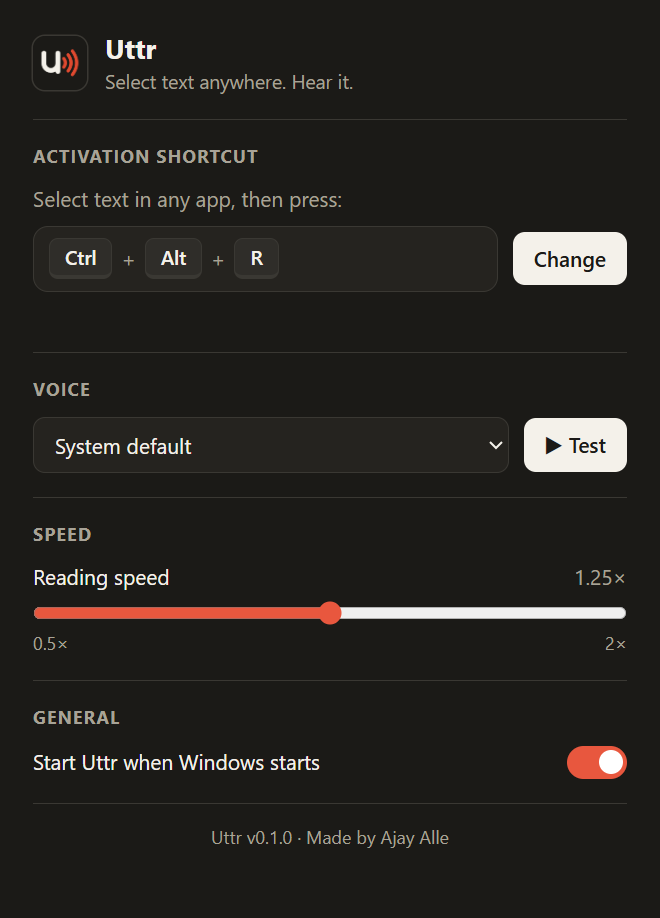

Uttr for Windows
Works in every app on your PC
Select text in Word, a PDF, Outlook, Slack, Chrome or anything else, press Ctrl+Alt+R, and a small bar appears at the bottom of your screen and reads it to you.
- One keyboard shortcut, and you choose it
- Floating bar with pause, speed and stop
- Updates itself automatically